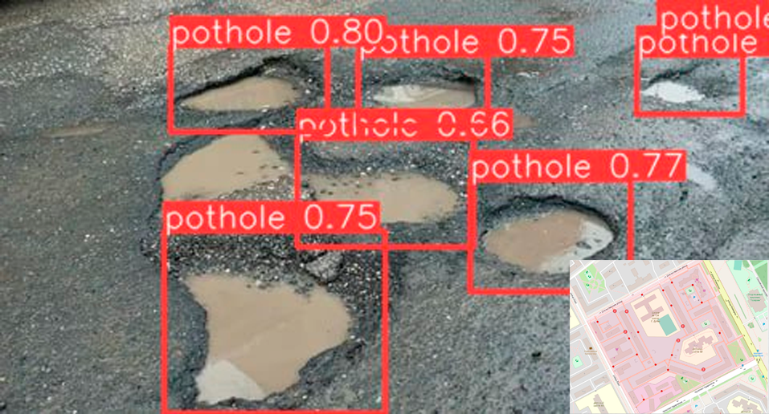

<body>
  <div class="container w-100">
      <section id="primary">
        <div class="card">
            <p class="fs-2 text-center my-2">
              ПРОГРАМНО-АППАРАТНЫЙ КОМПЛЕКС
            </p>
            
          <div class="container px-5 text-center">
            <h4>
              В рамках проекта предлагается усовершенствование методов и алгоритмов обработки данных, 
              полученных при диагностике дорожного полотна путем интеграции системы технического 
              зрения, основанного на применении нейронной сети, 
              а также автоматического проектирования графической карты 
              с многоуровневым присвоением весовых значений опасным участкам дорог.
            </h4>
          </div>
          <hr class="w-100">

          <div class="container m-0">
            <h3 class="text-center">Деятельность в рамках проекта</h3>
            <div class="row m-5 justify-content-center">
              <div class="col">
                
              </div>
              <div class="col">
                <h4>Собираем информацию о состоянии дорожного 
                  полотна из различных источников</h4>
                <div class="text-start">
                  Применяются следующие источники сбора геопространственной информации:
                  <ul>
                    <li>Аэросъемка с беспилотного летательного аппарата с тепловизором,
                       датчиком Lidar, датчиком GPS и высокоточной камерой</li>
                    <li>Съемка с TOF-камер на наземном общественном транспорте</li>
                    <li>Лабораторные диагностические станции</li>
                  </ul>
                  Собранная информация загружается на общий сервер 
                  для дальнейшей камеральной обработки.
                </div>
              </div>
            </div>
            <div class="row m-5 justify-content-center">
              <div class="col">
                <h4>Составляем электронный отчет</h4>
                <div class="text-start">
                  При составлении электронного отчета проводятся следующие камеральные работы:
                  <ul>
                    <li>Приведение цифровых измерений к единой форме</li>
                    <li>Автоматическое обнаружение и классификация дорожных дефектов 
                      нейронной сетью, выполняющей задачи компьютерного зрения,
                    </li>
                    <li>Присвоение классифицированным дефектам координат и добавление 
                      в общую базу данных, которая в дальнейшем будет включена в отчет,
                    </li>
                    <li>Составление таблиц и документов с результатами диагностики</li>
                    <li>Построение плана проведения ремонтных работ на данном участке</li>
                  </ul>
                </div>
              </div>
              <div class="col">
                
              </div>
            </div>
            <div class="row m-5 justify-content-center">
              <div class="col">
                
              </div>
              <div class="col">
                <h4>Строим графическую карту участка 
                  дороги с размеченными дефектами</h4>
                  <div class="text-start">
                    С помощью собственно-разработанных алгоритмов строим графическую карту 
                    с размеченными дорожными дефектами, информация о которых включает:
                    <ul>
                      <li>Дату обнаружения дефекта,</li>
                      <li>Улицу, на которой был обнаружен дефект,</li>
                      <li>Класс дефекта, исходящий из нормативных требований</li>
                      <li>Изображение дефекта</li>
                    </ul>
                  </div>
              </div>
            </div>
            <div class="row m-5 justify-content-center">
              <div class="col">
                <h4>Строим цифровой двойник местности</h4>
                <div class="text-start">
                  Собранная с датчика Lidar информация применяется для построения
                  3D модели поверзности и цифрового двойника, с размеченными 
                  дорожными дефектами, содержащими ту же информацию, что и в оцифрованной 
                  графической карте.
                </div>
              </div>
              <div class="col">
                
              </div>
            </div>
          </div>
            
          <hr class="w-100">

          <div class="card-body ml-5">
            <h4 class="mb-5 text-center">Научная новизна:</h4>
            <div class="row mx-2 justify-content-center">
              <div class="col d-flex align-items-center justify-content-center">
                <p>
                  
                </p>
                <p class="lead">Новейшая нейросеть</p>
              </div>
              <div class="col d-flex align-items-center justify-content-center">
                <p>
                  
                </p>
                <p class="lead">Автоматическая обработка 
                  геопространственной информации</p>
              </div>
              <div class="col d-flex align-items-center justify-content-center">
                <p>
                  
                </p>
                <p class="lead">Построение цифрового двойника поверхности</p>
              </div>
            </div>
          </div>
        </div>
      </section>
  </div>
</body>
